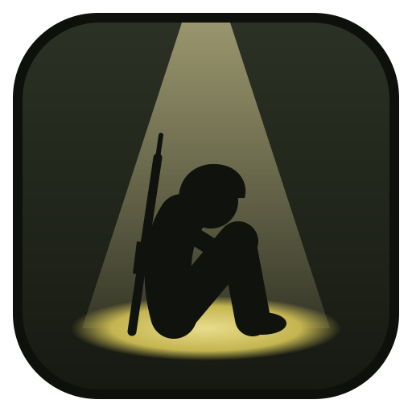

Thanks, you're a Supporter
Your receipt is on its way by email.
- Connect your Discord on the Polar receipt to get the Supporter role in the Loner-Strike Discord.
- For the in-game perks, type
/linkin game on a Loner-Strike server, then type/linkwith your code in our Discord (any channel; only you see the reply).
Need help setting it up? See the docs, or open an issue on GitHub. · Back to lonerstrike.com · Privacy · Terms